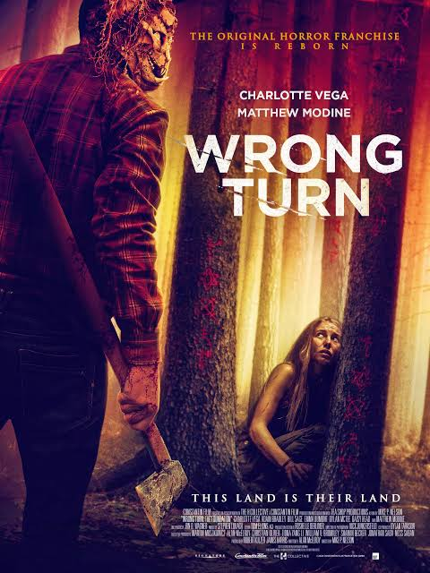

Wrong Turn is one of my favorite horror movies because it has suspense, action, and scary moments. The movie follows a group of people who become lost in a remote forest and must fight to survive.
The story begins when a group of friends takes a wrong turn while traveling. They become stranded in a remote forest and discover that they are not alone. They soon realize that dangerous people are hunting them.
The group must work together to find a way out of the forest. Throughout the movie, they face many dangerous and frightening situations while trying to survive.
Jen Shaw is one of the main characters. She is brave and determined to survive after becoming trapped in the forest.
Adam is another member of the group. He tries to help the others survive and find a way to escape from the forest.
The dangerous people living in the forest are the main threat in the movie. They make the journey difficult and frightening for the characters.

Image credit: Use a legally permitted movie poster image or an image provided by the instructor.
I really enjoy Wrong Turn because it is suspenseful and entertaining. The scary scenes and survival story keep me interested throughout the movie.
I would recommend this movie to people who enjoy horror, thriller, and survival movies. I like the way the characters have to use courage and teamwork to survive.